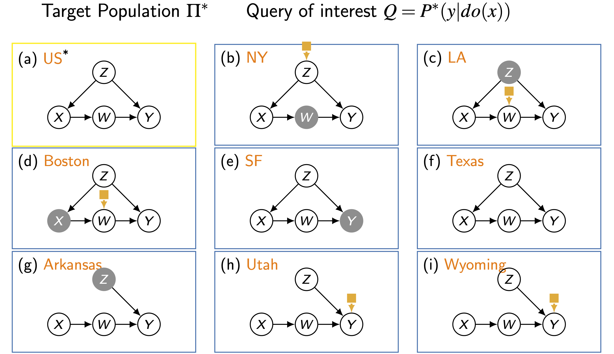

1. Introduction: All Data is Not Created Equal
현대의 데이터 과학(Data Science)은 수많은 데이터를 다루지만, 이 데이터들이 모두 동일한 가치를 지니거나 같은 방식으로 생성된 것은 아닙니다.
“All data is not created equal”이라는 명제는 Causal Data Science의 가장 핵심적인 출발점입니다.
우리가 현실에서 마주하는 데이터는 거의 예외 없이 다음과 같은 문제점들을 안고 있습니다:
- 상이한 실험 조건 (Different Experimental Conditions): 관찰 데이터(Observational)인가, 실험 데이터(Experimental)인가?
- 상이한 모집단 (Different Underlying Populations): 데이터가 수집된 집단이 우리가 알고자 하는 대상과 같은가?
- 비무작위 표본 추출 (Non-random Sampling): 샘플링 과정에서 편향(Bias)이 발생했는가?
- 비무작위 처치 할당 (Non-random Treatment Assignment): 처치(Treatment)가 무작위로 배정되었는가, 아니면 선택 편향이 있는가?
- 측정되지 않은 변수 (Unmeasured Variables): 인과 관계를 파악하는 데 필요한 변수가 누락되었는가?
이러한 문제들로 인해 수집된 데이터는 “지저분(messy)”하며, 우리가 추론하고자 하는 Target과 완벽하게 일치하는 경우는 매우 드뭅니다.
Causal Data Science의 목표는 이러한 이질적인(Heterogeneous) 데이터셋들을 결합하여 과학적이고 원칙적인(principled) 방법으로 인과 추론을 수행하는 것입니다.
2. Motivation: Why Causal Data Science?
- 왜 우리는 단순히 “빅데이터”를 모으는 것을 넘어, 데이터의 생성 과정을 고민해야 할까요? 아래 세 가지 주요 사례가 그 동기를 보여줍니다.
2.1. Genetics (Transportability)
- 쥐(Rats)를 대상으로 한 실험 연구에서 특정 물질이 발암성(Carcinogenic)이라는 결과가 나왔다고 가정해 봅시다.
- 우리의 질문은 다음과 같습니다.
- “이 결과가 인간에게도 그대로 적용될 것인가?”
- 이는 동물 모델에서 얻은 지식을 인간이라는 다른 모집단으로 옮길 수 있는지(Transportability)의 문제입니다.
2.2. Advertisement (Transfer Learning)
- 어떤 회사에서 ’제품 A’의 판매량을 높이기 위해 다양한 광고 전략의 효과를 분석했습니다. 이제 새로운 ’제품 B’를 출시하려고 합니다.
- “제품 A에서 얻은 데이터를 제품 B의 광고 전략 수립에 활용할 수 있는가?”
- 이는 기존 도메인의 지식을 새로운 도메인으로 전이(Transfer)하는 문제입니다.
2.3. Robotics (Domain Adaptation)
- 캘리포니아 사막에서 암석을 채굴하도록 훈련된 화성 탐사 로봇(Rover)이 있습니다.
- “지구에서 학습한 내용을 바탕으로, 화성에서의 비용 소모적인 탐색을 최소화할 수 있는가?”
- 환경이 급격히 변화했을 때, 에이전트가 어떻게 적응해야 하는지에 대한 문제입니다.
3. Heterogeneous Datasets: Formalizing the Messiness
- 데이터가 지저분하다는 것은 직관적이지만, 이를 수학적으로 다루기 위해서는 형식이 필요합니다.
- 우리는 데이터를 다음과 같은 속성들의 집합으로 분류할 수 있습니다.

- 위 그림(Figure 1)은 다양한 데이터셋(\(d_1, d_2, \dots\))이 어떻게 다른지를 보여줍니다.
- Target (\(Q\)): 우리의 목표는 \(P^*(y|do(x))\)를 알아내는 것입니다.
- Source Data:
- Population: LA, NY, Seoul, Boston 등 모집단이 다를 수 있습니다.
- Regime: 관찰(Observational) 데이터일 수도, 무작위 대조군 실험(RCT) 데이터일 수도 있습니다.
- Sampling: 나이(Age)나 사회경제적 지위(SES)에 따라 선택적으로 추출되었을 수 있습니다.
- Measurement: 어떤 데이터셋은 변수 \(W\)를 포함하지만, 다른 데이터셋은 포함하지 않을 수 있습니다.
4. The “Big Picture” in Causal Inference
- 전통적인 인과 추론(Classic Causal Inference)과 Causal Data Science가 바라보는 관점의 차이를 이해해야 합니다.
4.1. Classic Causal Inference Engine
- 전통적인 접근법(예: Pearl의 프레임워크)은 단일 모집단 내에서의 식별(Identifiability) 문제에 집중했습니다.
- Query: \(P(y|do(x))\)
- Causal Diagram (Knowledge): 변수들 간의 인과 구조 (DAG).
- Data: 관찰된 데이터 분포 \(P(V)\).
- Engine: 주어진 다이어그램에서 데이터만으로 쿼리를 계산할 수 있는지 판별(Yes/No)하고, 가능하다면 추정식(Estimand)을 도출.
4.2. Causal Data Science Framework
- 하지만 현실은 더 복잡합니다.
- 우리가 목표로 하는 Target Population (\(\Pi^*\))과 데이터가 수집되는 Source Populations (a, b, c, …)이 다르기 때문입니다 [cite: 104-135].

- 위 그림(Figure 2)에서 볼 수 있듯이, 각 소스 데이터는 구조적 차이를 가집니다.
- Target (US): \(X \rightarrow W \rightarrow Y\)와 같은 기본 구조.
- NY: \(W\)가 측정되지 않음 (Grey Node).
- LA: \(Z\)가 선택 편향의 원인이 됨 (Selection Node \(S\)의 개입).
- Utah: \(Z\)가 \(X\)에 영향을 주지 않는 실험적 환경(Randomized).
- Causal Data Science의 목표는 이러한 Multiple, Heterogeneous Datasets를 융합(Fusion)하여 Automated Scientist처럼 타겟 질의에 답하는 것입니다.
5. Dimensions and Tasks of Causal Data Science
- 이질적인 데이터셋을 통합적으로 다루기 위해, 데이터 수집 조건을 4가지 차원(Dimensions)의 튜플(Tuple)로 정의합니다. \[
\text{Data Collection Tuple: } (d_1, d_2, d_3, d_4)
\]
- \(d_1\): Population (모집단)
- \(d_2\): Regime (관찰 vs 실험)
- \(d_3\): Sampling (표본 추출 기전)
- \(d_4\): Measurement (측정된 변수 집합)
- 이 튜플의 변화는 우리가 해결해야 할 데이터 과학의 핵심 과제들과 1:1로 대응됩니다.
Task 1: Causal Inference (from Observational Studies)
- Transition: \((d_1, \text{Obs}, d_3, d_4) \longrightarrow (d_1, do(x), d_3, d_4)\)
- Description: 가장 고전적인 인과 추론의 영역입니다. 관찰 데이터(\(P(y|x)\))로부터 실험적 결론(\(P(y|do(x))\))을 도출합니다. 교란 요인(Confounding Bias)을 통제하는 것이 핵심입니다.
Task 2: Experimental Inference (Generalized IVs)
- Transition: \((d_1, do(z), d_3, d_4) \longrightarrow (d_1, do(x), d_3, d_4)\)
- Description: 우리가 원하는 것은 \(X\)에 대한 개입(\(do(x)\))의 효과인데, 실제 데이터는 도구 변수(Instrumental Variable, \(Z\))에 대한 개입(\(do(z)\))만 있는 경우입니다. 불완전한 순응(Imperfect Compliance) 문제를 다룹니다.
Task 3: Sampling Selection Bias
- Transition: \((d_1, d_2, \text{Select}(Age), d_4) \longrightarrow (d_1, d_2, \{\}, d_4)\)
- Description: 데이터가 특정 조건(예: 나이, 소득)에 따라 편향되게 수집되었을 때, 이를 전체 모집단(Random Sample)의 분포로 복원하는 문제입니다.
Task 4: Transportability (External Validity)
- Transition: \((\text{Bonobos}, d_2, d_3, d_4) \longrightarrow (\text{Humans}, d_2, d_3, d_4)\)
- Description: 소스 모집단(예: 보노보 원숭이, LA)에서 얻은 지식을 타겟 모집단(예: 인간, US 전체)으로 이송(Transport)하는 문제입니다. 환경적 조건의 차이를 극복해야 합니다.
Summary of Dimensions
| Dimension | Problem Domain | Key Challenge |
|---|---|---|
| 1. Experimental Cond. | Causal Identification | Confounding Bias |
| 2. Environmental Cond. | Transportability | External Validity |
| 3. Sampling Cond. | Selection Bias | Sample Selection |
| 4. Responding Cond. | Missing Data | Recovering from Missingness |
- 과거의 문헌들은 이 문제들을 각각 고립된 상태에서 특수한 모수적(parametric) 가정하에 다루었습니다.
- 하지만 Causal Data Science는 이 4가지 차원이 현실에서 복합적으로 나타난다는 점을 인식하고, 이를 통합적으로 해결하기 위한 일반화된 알고리즘과 조건을 연구합니다.